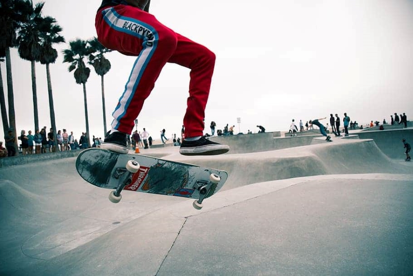

Eber Santos | Práctica #5
Práctica #5
Perfil del Creador de la Página
Soporte y Ayuda
| Galería de imágenes
Imágenes con distintas resoluciones, estilos de borde y características.
Ver Imágenes
Galería de Imágenes
Galería de Imágenes Resolución HD
Galería de Imágenes Resolución 4K
Imagen #1

36% comprobando presencia de archivos malintencionados
Descargar Imagen
Ir a página de la imagen proveniente
Copiar URL de Imagen
Imagen #2
Comprobando posibilidad de descarga exitosa %93
Descargar Imagen
Ir a página de la imagen proveniente
Copiar URL de Imagen
Imagen #3
Descargar Imagen
Ir a página de la imagen proveniente
Copiar URL de Imagen
Imagen #4
45% contener archivos malintencionados
35% contener virus o malware
20% descarga exitosa
Descargar Imagen
Ir a página de la imagen proveniente
Copiar URL de Imagen
1
2
3
4
Página Anterior
Página Siguiente
Relacionados con el creador
Página Principal del Creador
Instagram del Creador
Más sobre el creador
Fin